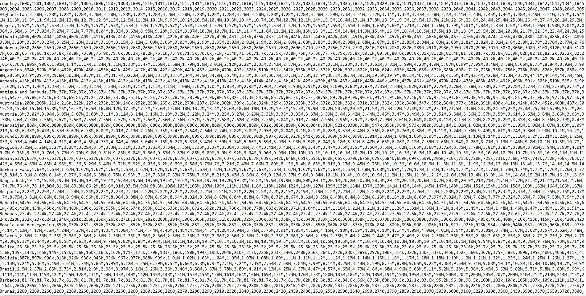
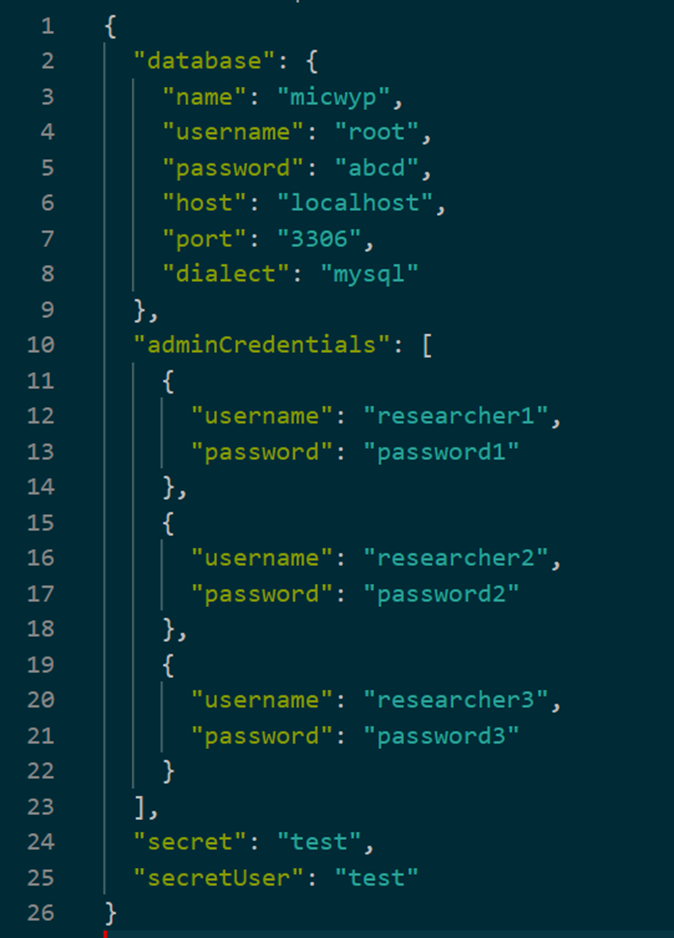

So far we’ve been creating the object to work with ourselves. Usually you will work with already existing datasets though (like a file from an experiment, survey etc.). The first thing you need to do to start working on your file is to load it into R session. There are many ways of loading a dataset or file into your R session so that you can use it. How to do it depends mainly on how the data is stored.
When loading a dataset there are generally a few things to consider:
Extension: data can be stored in different ways. This can also be related to what kind of information is stored in a given file. Depending on how a file is stored you might need to load it differently because it stores different information. For example excel files can have multiple sheets while spss files can store labels attached to variables. When loading a file you always have to provide files with extensions.
file path: files are stored in different places on your computer (or on the web). In order to load it you need to tell R exactly where to look for the file. A file path speifies exactly where exactly a file is stored e.g. C:/Users/User/Documents specifies the path to the documents folder. A file path can be absolute like the one shown above - its unequivocal. There are also relative file paths that specifies the location of a file relative to current directory. By default R will look in what is called working directory. For simple scripts this by default is set to the documents folder. You can check the current working directory with getwd() function. If you want to change the working directory you can do it with setwd() and pass a string with new directory as argument. This way of working with directories will do for now but it’s not really a good way of managing directories. If you move your script to another folder or share the data and script with other people using setwd() will fail you. Because of this you should avoid manually setting working directory.. One way to deal with this problem is to use here() function from the here package. It uses some heuristics to determine the directory of your script. It can solve the problem of moving or sharing files but remember it uses heuristics so it might not always work. The other solution is to use R projects which automatically set the working directory to the project directory. We’ll learn about them later on.
Loading flat files
We’ll start with loading what are called flat files: csv (short for comma separated values) and tsv (tab separated values). Both of these are basically plain text files just structures in a ver specific wayThe name kind of gives away how these formats store data: in csv columns are separated by commas and in tsv columns are separated by tabs. You can see an example of a csv file below:

Not very readable right? There are 2 packages with similar functions for loading .csv and .tsv files: utils and readr. We`ll load the gapminder population data saved as a .csv file:
Rows: 197 Columns: 302
── Column specification ────────────────────────────────────────────────────────
Delimiter: ","
chr (302): country, 1800, 1801, 1802, 1803, 1804, 1805, 1806, 1807, 1808, 18...
ℹ Use `spec()` to retrieve the full column specification for this data.
ℹ Specify the column types or set `show_col_types = FALSE` to quiet this message.
One big difference is that readr by default gives a message about number of rows, columns and types of variables that were loaded. Notice that it loaded every variable as character. That’s because the original file has “k” and “M” to indicate thousands and millions which is interpreted by R as text. We would need to convert those into proper numbers. Loading .tsv files is exactly the same, the only difference is that functions to do it are named read.tsv() and read_tsv().
There’s a bunch of things we can customize when loading data into R. Maybe you don’t need the entire dataset but only a subset of columns? Or you want to manually specify what types of variables you want? Or maybe the dataset you are using does not have variable names? You can specify all of these things as arguments to the loading functions. You can look at the documentation to lean more about them.
Loading data from SPSS
Data coming from statistical software can’t be loaded in such a simple way as above. Mainly because it stores more information. Here we’ll focus on .sav format which is used by SPSS. Apart from rows and columns (observations and variables) .sav format stores additional information e.g. on value labels - it is able to attach labels to numbers (like in Likert scales 1 can refer to ‘strongly disagree’). SPSS also allows to specify user-defined missing values (a common practice is to e.g. code missing values with 99).
This means we have to somehow deal with this additional information when loading .sav files. There are essentially two ways to go about it: reduce the amount of information stored or introduce a new type of values that can store this additional information. This first approach is taken by the foreign package. The second one is taken by haven package. Each of these approaches has some advantages and drawbacks. Stripping labels from values is generally easier and keeps consistency in terms of types of objects you are dealing with. You just keep working with numeric, integer, character or boolean values. The downside is that you lose some information and when e.g. saving a data file back to .sav format you can’t restore them. It might also cause problems if some variables need to be reversed beause you will lose information about that. Using haven allows you to keep all the labels but this is achieved by creating a new type of object: haven-labelled. Thanks to this you can keep all the information e.g. when saving back to .sav format. Most of the time you shouldn’t have problems with this new type of object but some statistical procedures from other packages might not like this and refuse to work. If that happens you can strip the labels using zap_labels().
loading data with foreign
The main functiom in foreign is read.spss(). By default foregin will load data into a list rather than a dataframe. You can load into a data frame by setting the argument to.data.frame to TRUE. Another useful argument is use.value.labels which, if set to TRUE will convert the numerical values stored in .sav into their corresponding labels. This is the way foreign deals with labelled values: you can use either numeric values or their labels. In the documentation of the function you can read about additional arguments that control handling of labels.
Please notice though that the documentation for read.spss() function in foreign states that it was originally developed in 2000 and does not guarantee compatibility with newer versions of SPSS (whcih hasn’t changed much since but still. At least it doesn’t look like windows xp anymore).
To look at loading .sav files we’ll use a trimmed version (the whole file is huge and we don’t need it) of World Value Survey wave 6:
Haven package deals differently with loading labeled variables. It introduces a new type of variable: haven-labelled data. It is capable of storing both numeric values and labels attached to it by adding an attribute to the variable with labels. You can load a file in haven using read_spss() (notice the underscore).
One last thing about the haven package. SPSS has the habit of storing categorical variables as labelled values (e.g. 1 - blue, 2 - brown). This can be a big problem because R will try to treat them as numeric values. This can lead to some ridiculous errors in analysis. To change a variable from haven-labelled to a factors with values taken from labels you can use as_factor() (again notice the underscore instead of dot).
Loading excel files
One additional thing you have to take into account when loading data from excel is that it can store a number of sheets in a single file. This has to be taken into account when loading such file into R.
One of the packages available for loading excel data is readxl.
The main difference in excel files is that they can store multiple sheets in one file. Because of that we need to specify which sheet we want to load. You can inspect the names of sheets with excel_sheets().
library(readxl)excel_sheets("datasets/pop.xlsx")
[1] "pop"
Once we know the sheet names we can load the one that interests us. We need to specify the path to the file and which sheet we want to load. There are of course many other arguments that give additional control over what is loaded but they are quite similar to other loading functions. You can read more on them in the documentation of the function. If you need to load multiple sheets you can save the sheet names as an object and then loop over them using lapply().
There are situations in which you might work with data that does not come from simple tables but is stored in completely different way. One example that we’ll introduce here is the json format. Json is short for Javascript Object Notation and is a common way of storing data in the web.
Json stores data as key - value pairs. These might not approximate tabular format and can be nested and fairly complicated. This type of data is especially common when downloading data directly from the web (e.g. social media data) or from APIs. You can imagine a file that stores information on each user of a website: their username, password and all posts that they have created along with information on each post like their creation date. It might look something like this:

Because json can be a complicated and nested structure the type of data that best approximates it in R is a list. There are ways to ask R to try and handle such list structure and try to convert it into a data frame but it does not always work. Cleaning an unevenly nested json can be a real pain sometimes!
We’ll look at an example of a NASA API that stores information on the number of people currently present on space stations. The package we’ll use to load the data is jsonlite.
Notice how the loaded object looks like. It is a list with 3 elements: number of people as an integer, a dataframe of astronauts and a string “success”.
nasa
$people
name craft
1 Sergey Prokopyev ISS
2 Dmitry Petelin ISS
3 Frank Rubio ISS
4 Jing Haiping Tiangong
5 Gui Haichow Tiangong
6 Zhu Yangzhu Tiangong
7 Jasmin Moghbeli ISS
8 Andreas Mogensen ISS
9 Satoshi Furukawa ISS
10 Konstantin Borisov ISS
11 Oleg Kononenko ISS
12 Nikolai Chub ISS
13 Loral O'Hara ISS
$number
[1] 13
$message
[1] "success"